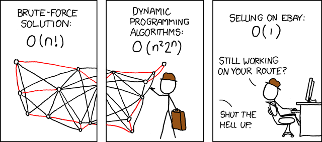

C17 Graphes ¶
"Bad programmers worry about the code. Good programmers worry about data structures and their relationships.
"
(lwn.net)
Cours¶
Attention
Ce diaporama ne vous donne que quelques points de repères lors de vos révisions. Il devrait être complété par la relecture attentive de vos propres notes de cours et par une révision approfondie des exercices.
Travaux dirigés¶
Travaux pratiques¶
 Exercice 1 : Matrice d'adjacence en C¶
Exercice 1 : Matrice d'adjacence en C¶
Dans cet exercice, on s'intéresse à la représentation par matrice d'adjacence en C, on rappelle la structure de données vue en cours :
Définition de la structure de données
-
Ecrire une fonction d’initialisation de prototype
void init_graphe(graphe g, int size)qui initialise un graphe de taillesizeen remplissant la matrice avec des valeursfalse -
Ecrire une fonction de création d'un arc dans un graphe de prototype
void cree_arete(graphe g, int i, int j)qui permet de créer une arête de entre les sommetsietj -
On donne ci-dessous une fonction permettant de visualiser un graphe :
Fonction de visualisation
// Visualisation du graphe g de taille n void visualise(graphe g, int n) { FILE *writer = fopen("temp.gv", "w"); fprintf(writer, "graph mygraph {\n"); for (int i = 0; i < n; i++) { fprintf(writer, "%d\n", i); for (int j = i + 1; j < n; j++) { if (g[i][j]) { fprintf(writer, "%d -- %d\n", i, j); } } } fprintf(writer, "}\n"); fclose(writer); system("xdot temp.gv &"); }Créer et visualiser le graphe suivant :
graph LR A(("0")) B(("1")) C(("2")) D(("3")) E(("4")) F(("5")) G(("6")) A --- B A --- C B --- D C --- F C --- G E --- G A --- E D --- F G --- F B --- C -
Ecrire une fonction qui renvoie le degré d'un sommet dans un graphe
-
Ecrire une fonction qui renvoie un tableau de dimension
NMAX, contenant les voisins d'un sommetice tableau contiendra une sentinelle-1indiquant la fin de la liste des sommets. Par exemple, sur le graphe représenté ci-dessus pour le sommet0, la fonction renvoie un tableau de tailleNMAXdont les quatre premiers éléments sont1,2,4et-1. -
Ecrire une fonction
completqui prend un graphe et sa taille effective en argument et ajoute tous les arcs possibles dans ce graphe. -
Ecrire une fonction
cyclequi prend un graphe et sa taille effective en argument et en fait un graphe cycle
Exercice 2 : Matrice d'adjacence en OCaml¶
Reprendre l'exercice précédent en OCaml en utilisant la structure de données vue en cours et rappelée ci-dessous :
La fonction de visualisation pour OCaml est donnée ci-dessous :
Fonction de visualisation
Pour la question 5., on pourra renvoyer la liste des sommets et pas un tableau.
Exercice 3 : Matrice d'adjacence dynamique linéarisée en C¶
Reprendre l'exercice 1 en C en utilisant la structure de données d'une matrice linéarisée allouée en mémoire lorsque la taille est connue :
Définition de la structure de données
On rappelle qu'avec cette structure, il devient inutile de passer la taille du graphe en argument puisqu'on y accède directement via le champe taille.
Aide
Pour rappel :
- La valeur de \(M_{ij}\) se situe à l'indice \(i \times |S| + j\) dans la matrice linéarisée
- L'indice \(k\) dans la matrice linéarisée correspond à la ligne \(\left\lfloor \dfrac{k}{|S|} \right\rfloor\) et à la colonne \(k \mod |S|\) de la matrice d'adjacence
On donne la fonction de visualisation adaptée à cette nouvelle structure
Fonction de visualisation
// Visualisation du graphe g
void visualise(graphe g)
{
int n = g.taille;
FILE *writer = fopen("temp.gv", "w");
fprintf(writer, "graph mygraph {\n");
for (int i = 0; i < n; i++)
{
for (int j = i + 1; j < n; j++)
{
if (g.madj[i * n + j])
{
fprintf(writer, "%d -- %d\n", i, j);
}
}
}
fprintf(writer, "}\n");
fclose(writer);
system("xdot temp.gv &");
}
Exercice 4 : Listes d'adjacence en C¶
On rappelle la structure de données vues en cours permettant de représenter un graphe par ses listes d'adjacence en C :
Définition de la structure de données
Attention
On rappelle que dans cette représentation la première colonne est le degré du sommet (et pas un numéro de sommet adjacent) A titre d'exemple, le graphe
graph LR
A(("0"))
B(("1"))
C(("2"))
D(("3"))
A --- B
A --- C
A --- D
B --- C. indique une valeur non utilisée du tableau.
-
Ecrire une fonction d’initialisation de prototype
void init_graphe(graphe g, int size)qui initialise un graphe de taillesizeen affectant le degré 0 à tous les noeuds. -
Ecrire une fonction de création d'un arc dans un graphe de prototype
void cree_arete(graphe g, int i, int j)qui permet de créer une arête de entre les sommetsietj -
On donne ci-dessous une fonction permettant de visualiser un graphe :
Fonction de visualisation
void visualise(graphe g, int n) { FILE *writer = fopen("temp.gv", "w"); fprintf(writer, "graph mygraph {\n"); for (int i = 0; i < n; i++) { fprintf(writer, "%d\n", i); for (int j = 1; j <= g[i][0]; j++) { if (i > g[i][j]) { fprintf(writer, "%d -- %d\n", i, g[i][j]); } } } fprintf(writer, "}\n"); fclose(writer); system("xdot temp.gv &"); }Créer et visualiser le graphe suivant :
graph LR A(("A")) B(("B")) C(("C")) D(("D")) E(("E")) F(("F")) G(("G")) A --- B A --- C G --- E C --- D D --- F B --- E E --- F A --- G -
Ecrire une fonction qui affiche la matrice d'adjacence du graphe.
-
Ecrire une fonction qui renvoie le degré d'un sommet dans un graphe
-
Ecrire une fonction
existede prototypebool existe(graphe g, int i, int j)qui renvoietruesi il y a un arc entre les sommetsietjetfalsesinon. -
Ecrire une fonction qui renvoie un tableau contenant les voisins d'un sommet
i.
Exercice 5 : Listes d'adjacence en OCaml¶
On rapelle la structure de données vue en cours permettant de représenter un graphe par liste d'adjacence en OCaml :
-
Ecrire une fonction d'initialisation
int -> graphequi renvoie un graphe d'ordrenn'ayant aucune arête -
Ecrire une fonction qui permet de créer une arête dans un graphe.
-
La fonction de visualisation pour OCaml est donnée ci-dessous :
Fonction de visualisation
let visualise g = let n = (g.taille - 1) in let writer = open_out "temp.gv" in output_string writer "graph mygraph {\n"; let rec aux i wl = match wl with | [] -> () | h::t -> if h>i then (Printf.fprintf writer "%d -- %d\n" i h); aux i t in for i=0 to n do Printf.fprintf writer "%d\n" i; aux i g.ladj.(i); done; output_string writer "}\n"; close_out writer; ignore (Sys.command "xdot temp.gv &");;Créer et visualiser le graphe suivant :
graph LR A(("A")) B(("B")) C(("C")) D(("D")) E(("E")) F(("F")) G(("G")) A --- B A --- C G --- E C --- D D --- F B --- E E --- F A --- G -
Ecrire une fonction qui affiche la matrice d'adjacence du graphe.
-
Ecrire une fonction qui renvoie le degré d'un sommet dans un graphe
-
Ecrire une fonction
existede prototypebool existe(graphe g, int i, int j)qui renvoietruesi il y a un arc entre les sommetsietjetfalsesinon. -
Ecrire une fonction qui renvoie une liste contenant les voisins d'un sommet
i.
Exercice 6 : Listes chainées d'adjacence en C¶
Comme indiqué en cours, on peut représenté les listes d'adjacence en C à l'aide d'un tableau de liste chainées. Reprendre les questions de l'exercice précédent à l'aide de cette nouvelle représentation.
struct maillon{
int valeur;
struct maillon* suivant;};
typedef struct maillon maillon;
typedef maillon* liste;
struct graphe{
int taille;
liste* ladj;};
typedef struct graphe graphe;
Pour réviser la structure de liste chainées, on pourra revenir si besoin sur cet exercice
On donne aussi pour cette représentation une fonction de visualisation !
Langagec
void visualise(graphe g)
{
FILE *writer = fopen("temp.gv", "w");
fprintf(writer, "graph mygraph {\n");
maillon * mc;
int n = g.taille;
for (int i=0; i<n; i++)
{
mc = g.ladj[i];
while (mc!=NULL)
{
if (i>mc->valeur) {fprintf(writer,"%d -- %d\n",i,mc->valeur);}
mc=mc->suivant;
}
}
fprintf(writer, "}\n");
fclose(writer);
system("xdot temp.gv &");
}
Exercice 7 : Graphes orientés¶
Note
Afin d'adapter les fonctions de visualisations au cas des graphes orientés, il suffit d'apporter les modifications suivantes :
- modifier la ligne écrivant l'entête
graph mygraphdans le fichier dot endigraph mygraph - modifier les arcs entre les sommets en
->(au lieu de--)
Dans le langage (C ou Ocaml) et avec la représentation de votre choix (matrice ou listes d'adjacence), représenter un graphe orienté et écrire sur le type graphe les fonctions suivantes :
- Test d'existence d'un arête
- Ajout d'un arête.
- Calcul du degré sortant d'un sommet.
- Obtention de la liste des successeurs d'un sommet.
- Calcul du degré entrant d'un sommet.
- Obtention de la liste des prédécesseurs d'un sommet.
Humour d'informaticien¶
